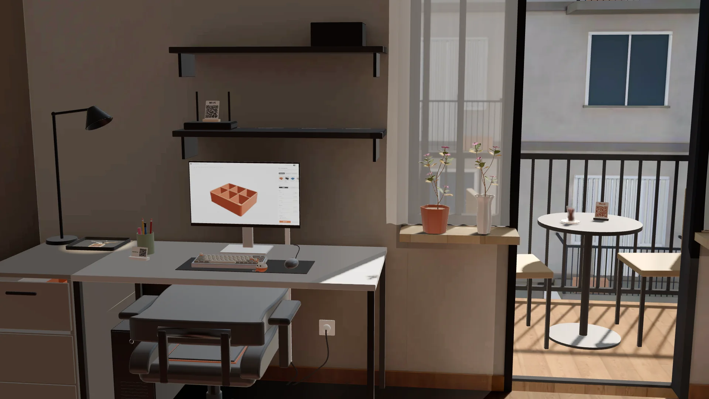

Oktos Workshop: tasarım ve 3B baskı atölyesi

Atölyenin orta katı.
Tasarlayıp bastığımız parçalar bu odada, yerli yerinde. Dolaş, beğendiğine yakından bak.
Odaya gir3B oda, girince yüklenir.

Tasarlayıp bastığımız parçalar bu odada, yerli yerinde. Dolaş, beğendiğine yakından bak.
Odaya gir3B oda, girince yüklenir.